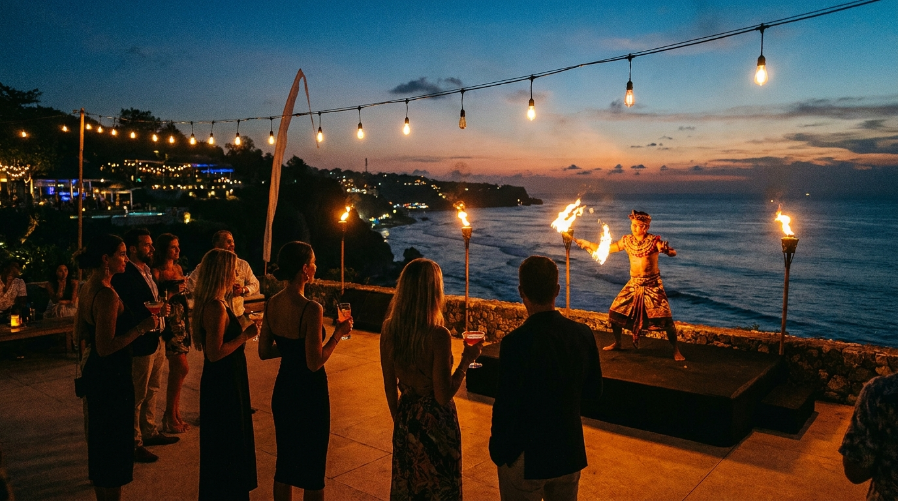

Uluwatu Nightlife Guide: Beach Clubs, Bars and Fire Shows

{ "title": "Uluwatu Nightlife Guide: Beach Clubs, Bars and Fire Shows", "meta_description": "Discover the best of Uluwatu nightlife! Our guide covers the top beach clubs, cliffside bars, live music venues, and epic fire shows for an unforgettable night.", "content_html": "Uluwatu Nightlife Guide: Beach Clubs, Bars and Fire Shows
\n\nAs the sun dips below the Indian Ocean, casting a golden glow across the limestone cliffs, Uluwatu transforms. The laid-back, surf-centric vibe of the day gives way to a sophisticated and electrifying energy. The Uluwatu nightlife scene is a unique blend of world-class beach clubs perched on dramatic cliffs, hidden cocktail bars with tiki vibes, and iconic cultural performances under the stars. It’s less about sprawling mega-clubs and more about curated experiences with breathtaking views. Whether you're seeking a sunset cocktail, an all-night dance party, or a memorable fire show, Uluwatu offers an evening adventure for every kind of traveler.
\n\nForget what you might know about Bali's other party hubs. Here, the soundtrack is often the crashing waves, the dress code is chic but relaxed, and the backdrop is always spectacular. From legendary Sunday sessions to intimate acoustic sets, let this be your guide to navigating the very best of nightlife in Uluwatu.
\n\nThe Crown Jewels: Uluwatu's Best Beach Clubs
\nThe cliffside beach club is the cornerstone of the Uluwatu nightlife experience. These stunning venues offer infinity pools, designer cocktails, and DJ sets from international artists, all with panoramic ocean views. They are the perfect place to watch the sunset and kick off your evening in style.
\n\nSavaya Bali: The Cliffside Superclub
\nCarved into the cliffs of Uluwatu, Savaya is a spectacle of design and entertainment. This luxurious venue, formerly known as OMNIA, is famous for its jaw-dropping cube bar that juts out over the ocean. By day, it's a chic spot to lounge by the pool. By night, it transforms into an open-air superclub, hosting some of the biggest names in electronic music. The atmosphere is high-energy and glamorous, attracting a fashionable crowd ready to dance until the early hours. Expect: World-class DJs, stunning architecture, and a VIP party experience.
\n\nSingle Fin: The Original Sunset Spot
\nPerched above the iconic Uluwatu surf break, Single Fin is a legendary institution. What started as a simple surfer's warung has evolved into a multi-level bar that perfectly captures the area's soul. It's the ultimate spot to watch pro surfers tackle the waves as the sun goes down, with a Bintang in hand. Their Sunday Sessions are famous across the island, featuring live bands and DJs that draw a massive, eclectic crowd. The vibe is casual, fun, and quintessentially Uluwatu. For those who spend their days on the waves, this is the perfect aprés-surf destination. You can learn more about the local surf scene in our guide to the Top 5 Uluwatu Surf Spots.
\n\nUlu Cliffhouse: Chic Vibes and Ocean Breezes
\nUlu Cliffhouse offers a more refined and relaxed beach club experience. With direct access to the beach via a winding staircase, a 25-meter infinity pool, and an open-air restaurant, it feels like a luxurious private estate. The music is often more chilled, with a focus on house, disco, and soul, creating a sophisticated yet unstuffy atmosphere. It's an excellent choice for groups, couples, and anyone looking to enjoy creative cocktails and delicious food in a beautiful setting. Their weekend events and special parties often feature top-tier international DJs, making it a key player in the Uluwatu nightlife circuit.
Lees ook: Bali Travel Tips: What You Wish You Knew Before Going
\n\nEl Kabron Bali: Spanish Flavours and Sunset Views
\nFor a taste of the Mediterranean in Bali, head to El Kabron. This Spanish restaurant and cliff club is renowned for its authentic tapas, paella, and sangria. The all-white decor against the turquoise ocean creates an idyllic setting that feels straight out of Ibiza. As the day ends, the venue becomes one of the most romantic spots to watch the sunset. The vibe is elegant and perfect for a special evening, making it a top recommendation in our Bali Honeymoon Guide. After sunset, the music picks up, with resident DJs spinning Latin and soulful house tunes.
\n\nBeyond the Beach Clubs: Uluwatu's Eclectic Bar Scene
\nWhile the cliff clubs may get the most attention, the wider Uluwatu area is dotted with unique bars and venues that offer a different kind of night out. From hidden gems to live music hotspots, there's plenty to explore once the sun has set.
\n\nHatch: A Psychedelic Tiki Bar Experience
\nStep into a different world at Hatch, a vibrant and quirky bar located near Padang Padang. With its colorful murals, Latin-inspired food, and potent tiki cocktails, Hatch offers a fun and unpretentious night out. They host regular themed nights, from beer pong tournaments to live DJ sets playing everything from hip-hop to reggae. It's a great place to meet other travelers and enjoy a more casual, high-energy party atmosphere away from the cliffs.
\n\nThe Cashew Tree: Wholesome Eats and Live Music
\nLocated in the heart of Bingin, The Cashew Tree is a collective favorite. Known for its healthy, delicious food during the day, it transforms into a lively community hub at night. Their Thursday night parties are legendary, featuring live bands and DJs that get everyone dancing on the lawn. The vibe is bohemian, family-friendly (early in the evening), and deeply connected to the local